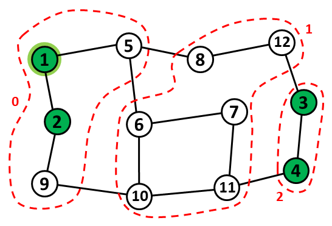

Karavana v poušti
Karavana se pohybuje v poušti mezi vesnicemi, kde každá vesnice je spřátelená nebo neutrální. Přesun karavany začíná v jedné dané vesnici
a dále probíhá po trasách.
Trasa vždy spojuje dvě vesnice a karavana se po ní může pohybovat v obou směrech.
Ve spřátelených vesnicích je o karavanu dobře postaráno co se týče proviantu. Když se karavana nachází ve spřátelené vesnici, je hodnota nasycení karavany
vždy rovna danému celému kladnému číslu D. Pokud se karavana přesune po libovolné trase do neutrální vesnice, klesne hodnota nasycení o 1.
Jinými slovy, hodnota nasycení karavany v neutrální vesnici V je vždy číslo o 1 menší, než byla hodnota nasycení v předchozí navštívené vesnici, ze které karavana do V
po jedné trase docestovala.
Výjimkou je pouze situace, kdy je hodnota nasycení v libovolné neutrální vesnici V1 rovna 0. V tomto případě karavana během pohybu po další trase
z vesnice V1 do nějaké vesnice V2 musí
nutně spotřebovat jeden balík přídavných zásob, bez ohledu na to, zda je V2 spřátelená nebo neutrální.
Výsledkem takového přesunu se spotřebováním balíku zásob je to, že ve vesnici V2 je hodnota nasycení karavany rovna D
(i v případě, že V2 je neutrální).
Pro dosažení cílové vesnice z výchozí vesnice se karavana může pohybovat libovolně po na sebe navazujících trasách.
Znamená to, že lze například stejnou trasu projít opakovaně, pokud je to z nějakého důvodu výhodné. Pro balíky přídavných zásob předpokládáme,
že nemohou být doplňovány ve vesnicích. Karavana musí být jimi vybavena od začátku své cesty.
Úloha
Je dán seznam spřátelených a neutrálních vesnic, seznam tras, číslo D a výchozí vesnice, která je spřátelená. Máme určit, kolik balíků přídavných zásob karavana minimálně potřebuje k tomu, aby byla schopná se přepravit do libovolné cílové vesnice. Zajímá nás také, kolik vesnic představuje pro karavanu cíl dostupný bez použití přídavných zásob.
|

Obrázek 1. Na obrázku uzly reprezentují vesnice a hrany reprezentují trasy mezi vesnicemi. Výchozí vesnice má číslo 1. Všechny spřátelené vesnice jsou zvýrazněné zeleně. Předpokládáme, že D = 1. Potom platí, že bez použití přídavných zásob jsou z výchozí vesnice dosažitelné právě vesnice číslo 1, 2, 5 a 9. Dále, vesnice číslo 6, 7, 8, 10, 11 a 12 jsou dosažitelné z vesnice číslo 1 s použitím jednoho balíku zásob, a konečně vesnice číslo 3 a 4 jsou dosažitelné se dvěma balíky zásob (ne však s jedním). Rozklad množiny vesnic na uvedené podmnožiny je znázorněn pomocí uzavřených červených křivek. |
Vstup
Na prvním řádku jsou čísla N, M, S, D, kde N je počet vesnic, M je počet tras mezi dvojicemi vesnic,
S je počet spřátelených vesnic a D je hodnota nasycení karavany ve spřátelené vesnici.
Vesnice jsou číslované od 1 do N. Výchozí vesnice má číslo 1. Spřátelené vesnice mají čísla 1 až S.
Následuje M řádků, kde každý řádek reprezentuje jednu trasu pomocí dvojice čísel V1 a V2.
Tato čísla označují vesnice, které daná trasa spojuje.
Pro každou dvojici vesnic V1 a V2 je na vstupu maximálně jedna trasa. Trasy jsou na vstupu v náhodném pořadí.
Předpokládáme, že všechny vesnice jsou z výchozí vesnice dostupné (s případným použitím přídavných zásob).
Platí 1 ≤ D ≤ 8, 1 ≤ S ≤ N, 1 ≤ N ≤ 4 × 105, M < 4N.
Výstup
Výstup obsahuje jeden řádek, na kterém jsou dvě čísla oddělená mezerou. První číslo je minimální počet balíků přídavných zásob, který postačuje k tomu, aby karavana docestovala z výchozí vesnice do libolně zvolené cílové vesnice. Druhé číslo je počet vesnic, které jsou pro karavanu dostupné z výchozí vesnice bez použití přídavných zásob. Mezi tyto vesnice počítáme i výchozí vesnici.
Příklad 1
Vstup12 14 4 1 1 5 5 8 8 12 6 7 9 10 10 11 11 4 1 2 2 9 5 6 6 10 7 11 12 3 3 4Výstup
2 4Data a řešení Příkladu 1 jsou znázorněna na Obrázku 1.
Příklad 2
Vstup10 10 1 1 2 3 7 3 10 2 10 7 4 6 9 2 5 9 1 8 8 5 8 6Výstup
3 2
Veřejná data
Veřejná data k úloze jsou k dispozici. Veřejná data jsou uložena také v odevzdávacím systému a při
každém odevzdání/spuštění úlohy dostává řešitel kompletní výstup na stdout a stderr ze svého programu
pro každý soubor veřejných dat.
Veřejná data